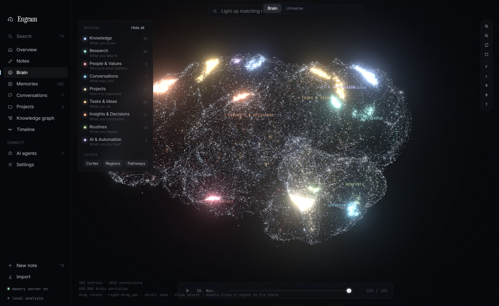

An anatomical brain, built from your entries.
A particle brain with two hemispheres, folded gyri, a cerebellum, the brainstem and spinal cord. Empty cortex stays dim and grey. Each entry lights up a patch in its region's colour, and the patch grows with the entry: a project with its entries, a conversation with its messages.
- Dense areas glow brightest, empty regions stay dark
- Click a point to open the entry
- Double-click a region to fly to it